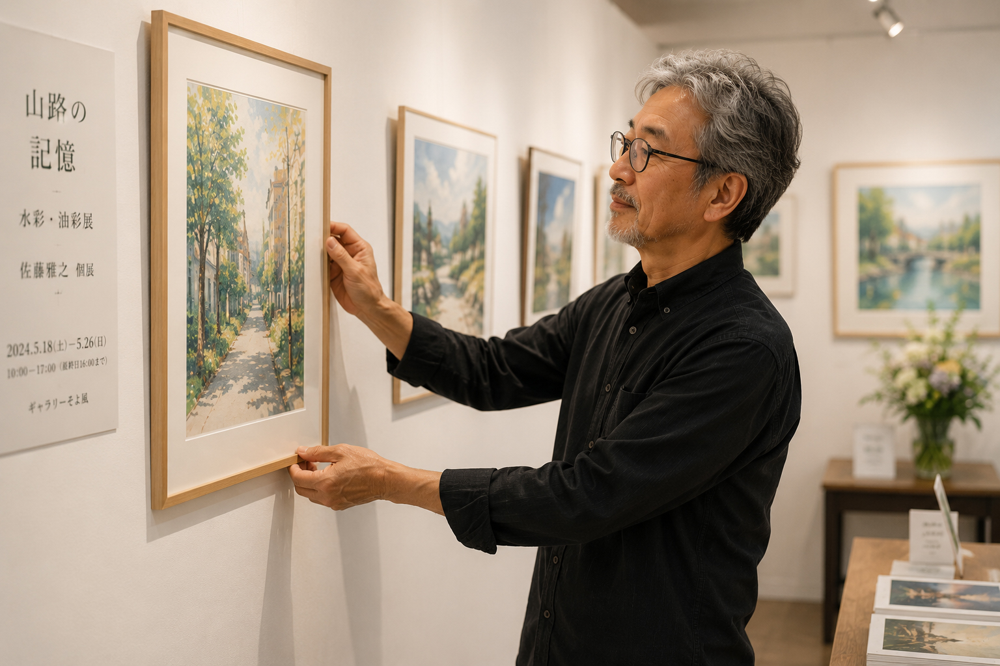

映画・音楽
サックス奏者・多田誠司さんの
ドキュメンタリー映画が上映
ここに本文を掲載します。
映画の内容、上映について、喉頭全摘後の活動など、掲載したい情報が決まったら差し替えます。
映画の内容、上映について、喉頭全摘後の活動など、掲載したい情報が決まったら差し替えます。
音楽
喉頭全摘後もフルートを演奏
ここに本文を掲載します。
フルートを始めたきっかけや、演奏を続けていることなど、掲載したい内容をあとから入れられます。
フルートを始めたきっかけや、演奏を続けていることなど、掲載したい内容をあとから入れられます。

絵画・個展
喉頭全摘後も絵を描き続け
個展を開いた方をご紹介
ここに本文を掲載します。
絵を描き続けてきたこと、個展を開いたことなど、紹介したい内容をあとから入れられます。
絵を描き続けてきたこと、個展を開いたことなど、紹介したい内容をあとから入れられます。